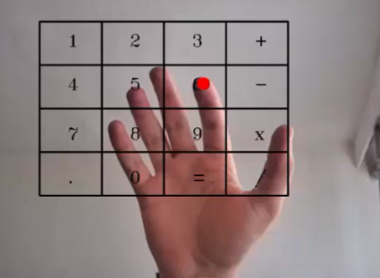

A real-time, touch-free calculator powered by hand gesture recognition using Python, OpenCV, and MediaPipe. Perform calculations seamlessly through intuitive gesture-based commands.
Detects hand gestures (0–5) for entering numbers and selecting operations with real-time tracking.
Perform calculations without touching the screen using hover-based gesture interaction.
Leverages MediaPipe and OpenCV for advanced hand detection and pose estimation.
Works on any computer with Python and a webcam installed. Fully portable and open-source.
The Hand Gesture Calculator is a computer vision application that interprets hand gestures to input digits and perform arithmetic operations. Using Python, OpenCV, and MediaPipe, it tracks hand and finger movements in real time for a seamless, interactive experience.

Tools and frameworks used to build this gesture recognition system.
Core programming language for the application logic and gesture processing.
Computer vision library for video capture and image processing operations.
Google's framework for hand detection and landmark estimation.
Numerical computing library for mathematical operations and data manipulation.
Visualization library for displaying gesture data and results.
Deep learning framework for advanced gesture classification models.
Advanced functionality powered by computer vision and machine learning.
Detects and tracks hands with high accuracy in real-time using MediaPipe's advanced pose estimation algorithms.
Classifies hand gestures (0-5 fingers) for number input and operation selection with millisecond response time.
Performs addition, subtraction, multiplication, and division based on recognized gesture sequences.
Real-time visual display with hand overlay, gesture indicators, and calculation results on screen.
Optimized for low latency with efficient frame processing and minimal computational overhead.
Works seamlessly on Windows, macOS, and Linux with any compatible webcam or camera input.
Real-time processing speed
Gesture accuracy rate
Input recognition (0-5)
Arithmetic operations
How I overcame technical obstacles to build this project.
Maintaining high accuracy across different lighting conditions and hand angles.
Processing video frames fast enough for responsive gesture recognition.
Distinguishing between similar gestures without false positives.
Handling multiple hands in the frame without confusion.
I'm actively seeking software engineering and full stack development internship opportunities. This project demonstrates my ability to work with advanced computer vision technologies and build innovative solutions.